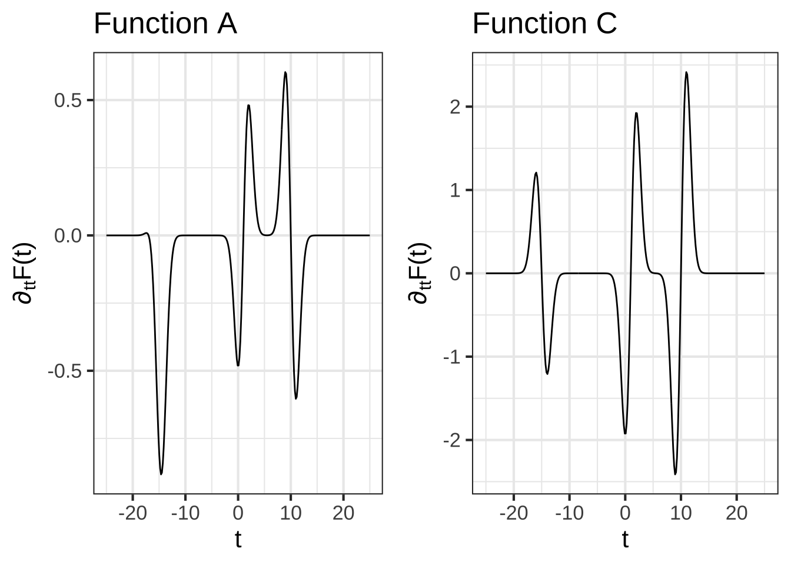

2 Visualizing anti-differentiation
Many students wonder how it is possible to reconstruct a function \(F(x)\) from its derivative \(f(x)\). This may be especially true for those who have studied calculus previously, who may have been taught that anti-differentiation is an advanced topic and may have struggled with the algebraic methods that are traditionally emphasized many calculus courses.
The point of this short chapter is to show you that anti-differentiation is easy if you look at it the right way. As an example, consider the function \(F(x)\) shown in Figure ??.
Now imagine that we sliced up \(F(x)\) over small sub-domains of \(x\), as in Figure ??. That is, we approximated \(F()\) piecewise locally.

Can you reconstruct \(F(x)\) from the local segments?
Start by reading off the function value from the last point in the left-most segment. That’s been marked in Figure ?? with a blue dot. The function value at that dot is 7.072.
Now take the second segment. The idea is to move that segment upward until it joins the first segment at the blue dot. You can do that by adding 7.072 to the second segment.

Now read off the new value at the end of the second segment, it’s 4.198. Add this amount to the third segment …

Continue this process until you have reconstructed \(F(x)\) from the local segments.
You may object: “Of course you can reconstruct \(F(x)\) from the local segments, but this isn’t the same as reconstructing \(F(x)\) from its derivative \(\partial_x F(x)\).” My answer is, “That depends on how many segments you use.”
Let’s use many more segments:

Notice that many of the segments are straight lines. That’s understandable, since any function looks like a straight line over a small enough domain.
Each of those straight-line segments is drawn over a domain \(x_i < x < x_i+h\) that has width \(h\). The slope of each segment is \(\partial_x F(x_i)\) and it’s height is \(h \partial_x F(x_i)\). Thus, to draw the segments we don’t need \(F(x)\), we just need \(\partial_x F(x)\).
You might continue to object, since not every one of the segments is a straight-line whose slope and height can be figured out with \(\partial_x F(x)\). That’s true in the figure because we made the segments fairly wide. No reason why we can’t make them smaller for the calculation (although you wouldn’t be able to distinguish them visually from one another very well).
Or, here is another segment drawing trick. Even the curved segments in Figure ?? are essentially quadratic. The derivative of each quadratic is a function of \(x\)—that’s why they curve. We can write that derivative using the first two derivatives of \(F(x)\), that is, as \(\partial_x F(x) = \partial_x F(x_i) + \partial_{xx} F(x_i) [x-x_i]\). You’ll see in Chapter XXX that we have a simple formula that will construct the individual quadratically-shaped segment from \(\partial_x F(x)\).
Exercise 28.02:  BhGRKU
BhGRKU
The graph shows a function \(G(t)\) broken up into segments. Draw \(G(t)\) by putting together the segments.
 The segment in blue is obviously not a straight line. As you can see, the blue segment spans the sub-domain \(0 \leq x \leq 0.5\).
The segment in blue is obviously not a straight line. As you can see, the blue segment spans the sub-domain \(0 \leq x \leq 0.5\).
How do we draw that segment knowing just \(\partial_t G(t)\) and therefore \(\partial_{tt} G(t)\).
The values of those two functions at \(x=0\) are \(\partial_t G(0) = -1.988\) and \(\partial_{tt} G(0) - 5.599\). And, since all the segments have their left end anchored at a vertical value of zero, you know \(G(0) = 0\).
Using Taylor series, construct a function centered at \(x=0\). Plot it out and see that it reconstructs the blue segment on the domain \(0 \leq x \leq 0.5\).